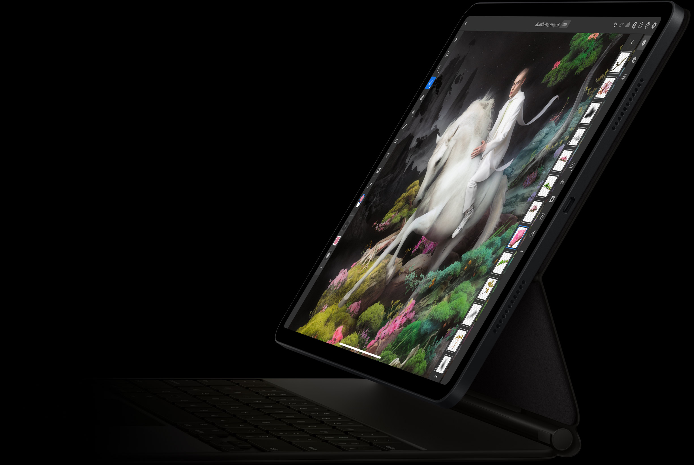
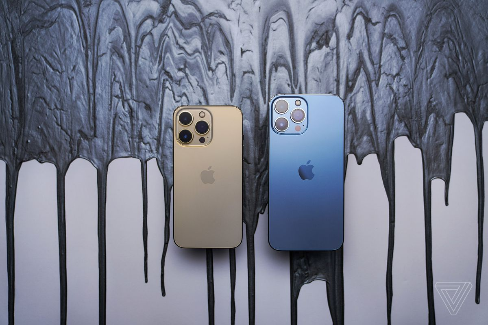
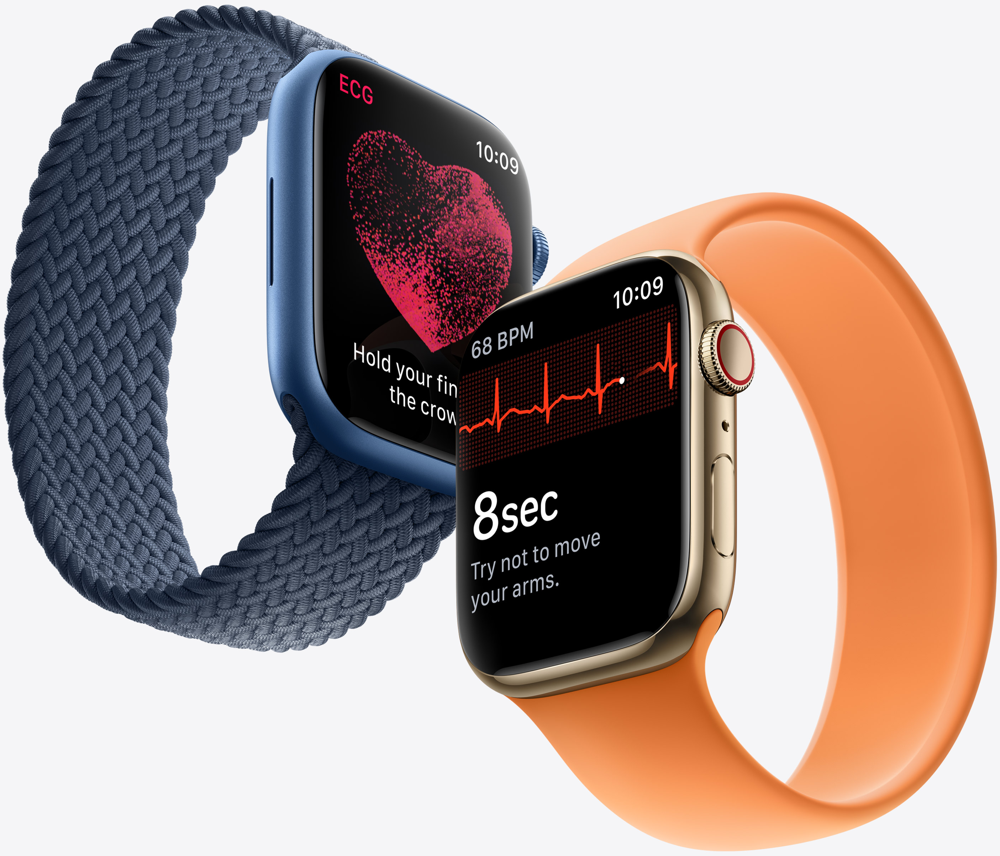
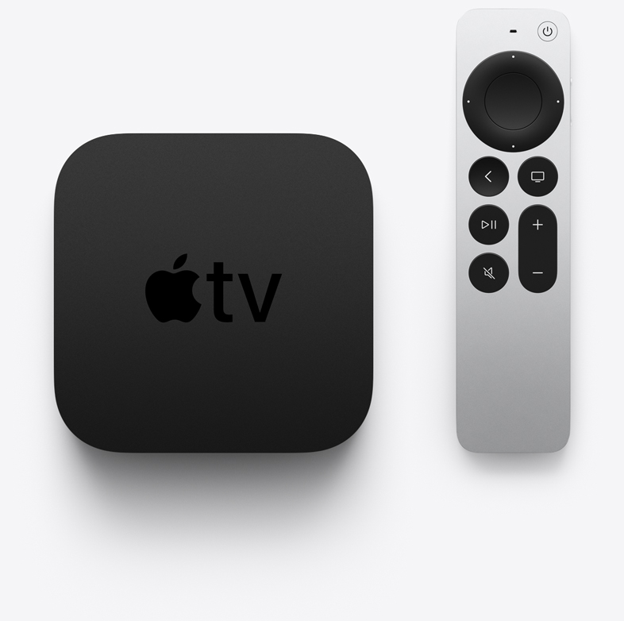
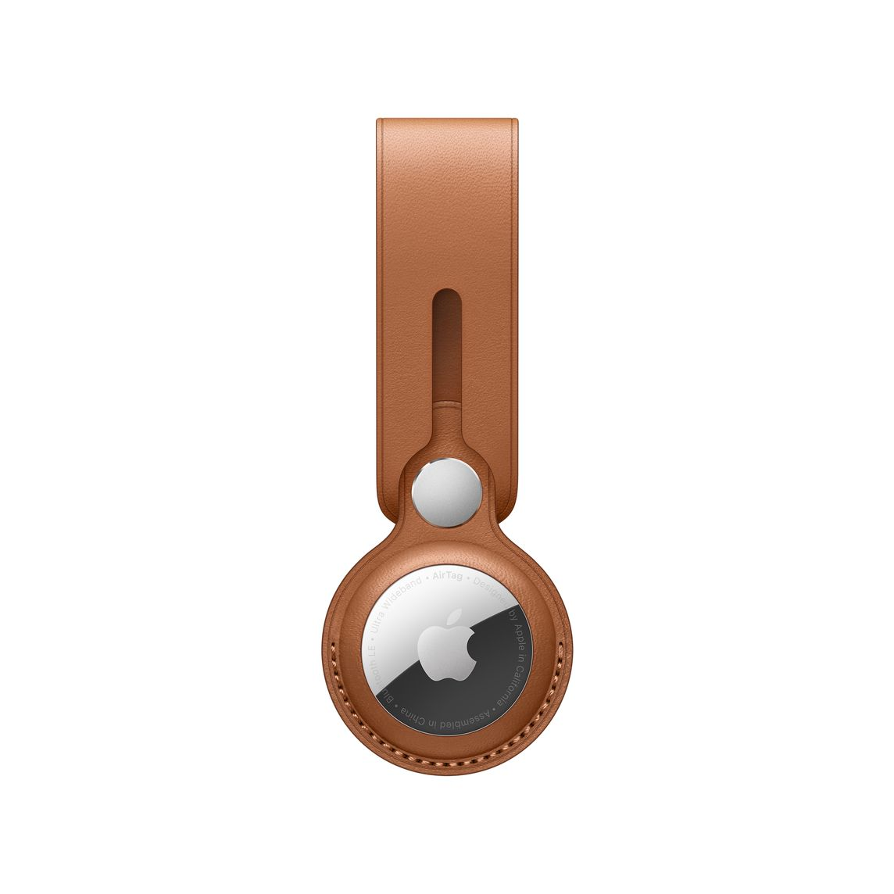

Apple is one of the leading branding companies in the world. The world's largest technology company by revenue (totaling $274.5 billion in 2020) and, since January 2021, the world's most valuable company.
Apple recently launched new models of phones termed "iPhone 13 Series".
Apple has different product lining some of them are:
The MacBook Pro is one of Apple's flagship laptops, featuring greater performance, active cooling, and the Touch Bar. As a vital product in the Mac lineup, Apple typically updates the 13-inch MacBook Pro on an annual basis.

There are two different 13-inch MacBook Pro models currently available. They look almost identical, but one is positioned as a lower-end model with an Apple-designed M1 chip, two Thunderbolt 3 ports, and a price starting at $1,299, while the other is positioned as a higher-end model with an Intel processor, four Thunderbolt 3 ports, and a price starting at $1,799.
Announced in November of 2020, the M1 MacBook Pro is among the newest Macs in Apple's lineup and it is still believed to be fairly early in its product cycle.On the other hand, the high-end Intel models that remain in Apple's lineup launched in May of 2020. These models are believed to be approaching the end of their product cycle. Apple is phasing Intel-based Macs out of its product lineup in favor of its own more powerful and efficient custom silicon chips, and a major overhaul of the high-end 13-inch MacBook Pro is expected to arrive later this year.Users who are looking for a high-end MacBook Pro should wait for updated models with larger displays, more ports, and Apple silicon chips to launch later this year. We do not recommend buying an Intel-based MacBook Pro.Although the high-end MacBook Pro is expected to be replaced with a redesigned model later this year, it is likely that the current M1 MacBook Pro will remain in the lineup as the lower-end option. In spite of this, customers interested in the more affordable MacBook Pro may be better off getting the M1 MacBook Air instead.
The iPad Pro is Apple's high-end tablet computer. The latest iPad Pro models feature a powerful M1 chip, a Thunderbolt port, an improved front-facing camera, a Liquid Retina XDR mini-LED display option on the larger model, and up to 16GB of RAM and 2TB of storage. Apple typically updates the iPad Pro every 12 to 18 months.
There are two different iPad Pro models currently available. One has an 11-inch LED Liquid Retina display and a price starting at $799, while the other has a better 12.9-inch mini-LED Liquid Retina XDR display and a price starting at $1,099.
Announced in April of 2021, the M1 iPad Pros are still fairly early in their product cycle, meaning that now is a good time to buy.The 11-inch iPad Pro is the most portable iPad Pro option, also being thinner and lighter than its larger counterpart, whereas the 12.9-inch iPad Pro is the best option for entertainment and productivity tasks that can take advantage of the larger display.Other than screen size, the two iPad Pro models have different display technologies. Although they both support the same key features like 120Hz ProMotion, P3 wide color, and True Tone, the 12.9-inch model has a mini-LED display. This allows the larger iPad Pro to deliver up to 1,000 nits of full-screen brightness, 1,600 nits of peak brightness, a 1 million-to-1 contrast ratio with deeper blacks, and true-to-life HDR. Users who consume or create HDR content, or would simply prefer a better display, should opt for the 12.9-inch model.Beyond the screen size and display technology, the two iPad Pro models are identical. There is a $300 price difference between the smaller and larger model, so it is only worth getting the larger model if you can take advantage of the mini-LED display or the larger screen. It is also worth noting that some accessories, such as the Magic Keyboard and Smart Keyboard Folio, are $20 to $50 more expensive for the larger model.
The iPhone 13 and 13 mini are being sold alongside the iPhone 13 Pro and Pro Max, which are this year's high-end flagship smartphones. Compared to the iPhone 13 and 13 mini, the Pro models offer a higher build quality and features that aren't available with the more affordable iPhones.
Compared to the standard iPhone models, the iPhone 13 Pro and Pro Max feature a stainless steel frame, 120Hz ProMotion displays, and triple-lens camera systems with improved Wide, Ultra Wide, and Telephoto lenses and higher-end photography options like macro capabilities, and the ProRes video format.
The Apple Watch Series 7 is Apple's latest smartwatch, featuring a larger always-on Retina display, a more rounded design with a larger casing, improved durability, and faster charging, starting at a price of $399.
Announced in September 2021, the Apple Watch Series 7 is the newest Apple Watch in Apple's lineup and it is at the start of its product cycle. Apple tends to release new Apple Watch models every September, and there is no reason to suggest that a new Apple Watch Series 8 will not launch next year. There are early signs of Apple Watch Series 8 models with a number of upgrades and improvements, but since this is likely still around a year away, now is the best time to buy the Apple Watch Series 7.
While the Apple Watch Series 7 is Apple's most full-featured, high-end smartwatch for those who want features like blood oxygen monitoring, ECG, an always-on display, and more premium finishes, users who are looking for a more affordable option should consider the Apple Watch SE. Starting at $279, the Apple Watch SE offers many key Apple Watch features, such as an optical heart rate sensor and fall detection, but at a lower price that balances functionality and affordability.
The Apple TV is Apple's set-top box. The latest Apple TV 4K features a faster A12 Bionic chip, support for high-framerate HDR, and a redesigned Siri Remote. Apple typically updates the Apple TV infrequently, releasing a new model around every three years.
There are two different Apple TV models currently available. One is the Apple TV HD from 2015, featuring support for displays with up to 1080p resolutions, an A8 chip, 32GB of storage, HDMI 1.4, Wi-Fi 5, Bluetooth 4.0, and a price of $149. The other is the second-generation Apple TV 4K from 2021, featuring support for displays with up to 4K resolutions, an A12 Bionic chip, up to 64GB of storage, HDMI 2.1, Wi-Fi 6, Bluetooth 5.0, and a price starting at $179. Both come with the same redesigned Siri Remote.
Apple in April 2021 unveiled its long awaited AirTag after years of rumors and speculation. The small circular tag is designed to be attached to items like keys and wallets to allow these accessories to be tracked using Bluetooth right alongside Apple devices in the Find My app.
A single AirTag is priced at $29, and a package of four AirTags can be purchased for $99.